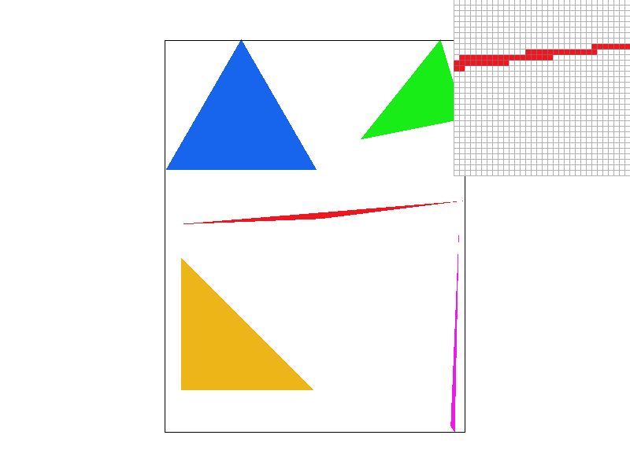
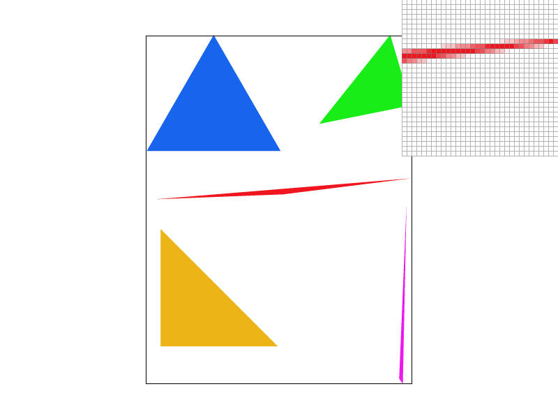
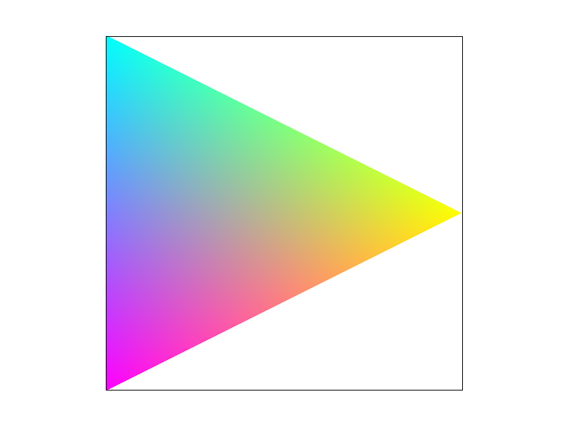
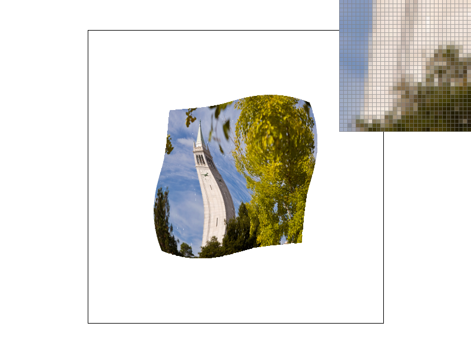
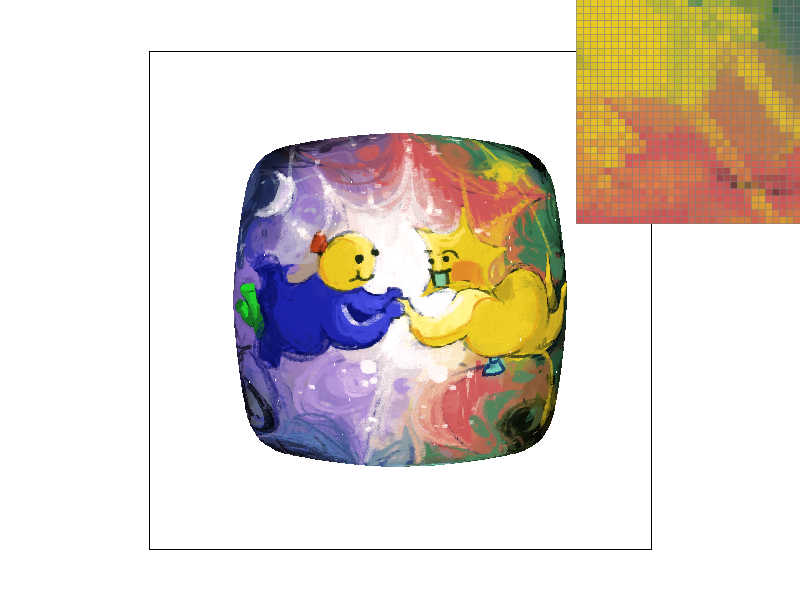

CS184/284A Spring 2025 Homework 1 Write-Up
Link to webpage: link site (so meta)
Link to GitHub repository: repo link
Overview
In this homework, I implemented a rasterization pipeline that takes in an SVG file and draws it. I also implemented various techniques for reducing anti-aliasing, including supersampling, level sampling, and pixel sampling. It allows you to take an image and play with the different settings to see how a very pixellated image can become smoothed out and more pleasing to look at.
Interesting things I've learned: how to translate from sample to texture space. How to clamp values to ensure that my final result looks nice. The actual equation for how to index my coordinates based on supersampling requirements. And although it didn't end up really affecting my code that much, it was interesting to see in action how floating point errors affected the outcome, especially in my lerp function. It caused some interesting visual glitches, though surprisingly enough it only happened when I was implementing a version that supposedly had higher precision! So I reverted to my original lerp function instead.
Task 1: Drawing Single-Color Triangles
Process
First, I determine the bounding box of the triangle by fetching the minimum and maximum x and y coordinates from the three point pairs. If the points are given in the wrong order, I check at the beginning to ensure winding ordre is correct and reorder them if necessary. Using a nested for loop, I iterate through each pixel in the rectangle and use the three line test to check if they are within the bounds of the triangle. To ensure that the edges of the triangle are rasterized, I check the bounds using a >= comparison. However, I acknowledge that this doesn't follow OpenGL convention.
Speed
My algorithm is no worse than one that checks each sample in the bounding box of the rectangle because that is what I am doing--I am iterating through each pixel in the bounding box and checking whether or not it is inside the bounding box. Both my algorithm and the one described in the homework spec run in \(O(n^2)\).
Task 2: Antialiasing by Supersampling
Walkthrough
The biggest part of figuring out supersampling was knowing when and how to update the sample_buffer. I started by modifying my rasterize_triangle() function to take a sample of each pixel of the original image \(sqrt(n)\) times, for an n sampling rate. I defined \(dim = sqrt(n)\) as a variable in many of my functions, as it appeared very frequently. I also had to modify my line_test() function to use any threshold, rather than just 0.5 as implemented in Task 1. I moved that bit of the code out of line_test and into rasterize_triangle().
This also meant I had to move some other things around, as I was originally calling fill_pixel() in rasterize_triangle(). However, since I wasn't implementing supersampling for points and lines, I assigned colors to the sample_buffer directly in rasterize_triangle() and adjusted fill_pixel() accordingly so that it filled the correct pixels based on the sample_rate.
I also had to adjust for the sample_rate in set_sample_rate() and set_framebuffer_target().
Then, in resolve_to_framebuffer(), I "condensed" the n samples into one by averaging the colors over them. This was accomplished similarly to the initial sampling process in rasterize_triangle(), with the biggest part again being iterating over sample_buffer--I ran into a lot of visual bugs.
As a high level overview, I was sampling each pixel n times, mapping it to a sample_buffer that was n times as big as the original image, then returning to the original image size by averaging the color over n pixels for every pixel in the final image.
Supersampling is useful because it smooths out jagged points in an image. By making the harsh color changes a little blurrier, it hides some of those jagged edges that we don't want. It also has the effect of blurring the entire image, making it seem "higher resolution" or clearer, despite being the same. This helps mitigate anti-aliasing because of how it hides jaggies and unwanted weird artifacts.
|  |  |
We see some of this behavior in the 1, 4, and 16 supersampled images. You can see in the pixel viewer that the red corner starts out looking very jagged. In the middle image, it looks smoother, blurrier, but still a little strange; in the last one, it basically looks like a neat, straight corner--albeit much more blurry than the other two.
These results are observed because of supersampling. When we take an average of n samples, especially on the edges, we get pixels that are not the same color as the original image, but some blend of the two. Intuitively we see how this makes sense. Then, in the final image, the halfway color appears as blurriness between, for example, the white and red edges shown. This helps smooth the image out and make it look nicer.
Task 3: Transforms
I turned cubeman into a dog (cubedog?), though perhaps he looks more like a donkey. The torso is the same, just scaled differently. The four legs come from cubeman's leg segments, which I translated. The tail is from his left arm, which is translated and rotated to give it a bit of a curve. The ears are from his right arm, which are also translated and rotated. I drew a new rectangle for his eye as well.
Task 4: Barycentric coordinates
Barycentric coordinates are coordinates for triangles. In two dimensions, the typical (x,y) Cartesian coordinates map to \(\alpha, \beta, \gamma \) in Barycentric coordinates. They're defined in relation to the three vertices of the triangle; if they are positive, they are inside the triangle, and if they are negative, they are not. They can easily be used to interpolate values across the inside of the triangle, like color or sound or whatever attribute that can be described as a vector.
One way to think about barycentric coordinates, as outlined in lecture, is from a geometric perspective. Consider a triangle, where from one point we drop a line to the edge opposite from it, creating an orthogonal line. One of the coordinates--maybe \(\alpha \), in this case--lies on this line, dividing it into two. It is thus the ratio between the side closest to the edge and the side closest to the point. In this way, one can map out every part of the inside of the triangle.

|
 |
To demonstrate this linear interpolating behavior, I have a CMYK triangle here (not RGB because I'm a purist). At each corner is a pure cyan, magenta, and yellow color, which get smoothly interpolated through the inside of the triangle. This is based on calculating the barycentric coordinates for each pixel in the triangle, and essentially setting the color there to the proportional sum of the vertex colors (e.g. multiplying \(\alpha \) by yellow).
Task 5: "Pixel sampling" for texture mapping
Pixel sampling is a way to map a texture space to a sample space. For each point in a certain triangle in sample space, it's mapped to a point in a triangle in texture space. You first compute the barycentric coordinates of the point--which is the same in sample and texture space--then convert back to cartesian coordinates using the texture space triangle coordinates.
The way I implemented it is as follows. The control flow--loops and if statements--are the same as implemented in earlier parts. The only difference here was needing to calculate the barycentric coordinates and the coordinates in (u,v) texture map space. I made sure to clamp my values so that there wouldn't be streaky lines in my final output. Next, I called tex.sample(sp) on the SampleParameter object I created, which then handled logic for nearest/bilinear sampling.
For nearest neighbor sampling, I essentially scaled the (u,v) coordinates by the dimensions of the mipmap to get the correct location, then returned the texel with those coordinates. I made sure to clamp the values as well, as I didn't want discontinuity due to the edge of the texels. For bilinear sampling, I implemented logic to calculate which four pixels I was going to sample from out of the nine total possible. Then, I fetched the texels at each of those four points, and lerped them together to get the final result.
Nearest neighbor sampling is simpler than bilinear. You take the converted coordinate and round it to the nearest whole integer, as texture space works in whole pixels. Then, that pixel is returned.
Bilinear sampling happens when you take the four pixels in a square around the point that you're trying to sample for. You linearly interpolate between the color/texture values for each of those pixels, then return the one value.

|
 |
TL: nearest neighbor 1x. TR: bilinear 1x. BL: nearest neighbor 16x. BR: bilinear 16x.
As the pixel viewer shows, the bilinear sampling is smoother than the nearest neighbor one. This is most evident in the 1x sample; there are clear individual pixels in the nearest neighbor image, while the bush looks a little more blurred in the bilinear case. Even in the 16x cases, the bilinear sampling looks smoother than the nearest neighbor one. That is because bilinear sampling interpolates between four values instead of just choosing one; this means that there is more smoothness and continuity between the different regions, especially those with high contrast.
Task 6: "Level Sampling" with mipmaps for texture mapping
Level sampling is used to change which mipmap you're sampling your textures from. It's used to optimize performance, as it means areas that are further away from the viewpoint don't require as detailed of a texturemap as areas closer to the viewpoint.
The brunt of my implementation is in calculating the partial derivatives of the (u,v) coordinate that I am sampling from the texture map. The calculations are fairly straightforward. Finding the nearest appropriate mipmap is just a matter of rounding the returned decimal value from get_level(). And getting the level linearly involved finding the whole integer level above and below the returned value, fetching the texture values for those two mipmap levels, then lerping them together.
Between pixel sampling, level sampling, and supersampling, I would say the one that is slowest and most memory intensive is supersampling. It requires you to allocate more memory space for the sample buffer, and it takes a long time to switch between the other modes at high supersampling rates becaues you have to calculate the correct values for each subidivision of the input file. Pixel and level sampling are fairly similar, with honestly few negligible differences between the two. When all three are used in conjunction, they can really smooth out an image, especially when bilinear sampling is used. In both pixel and level sampling, nearest neighbor sampling creates more obvious jagged edges--especially in the case of pixel sampling. In my opinion, pixel sampling and supersampling have greater anti-aliasing power than level sampling does.
|  | |